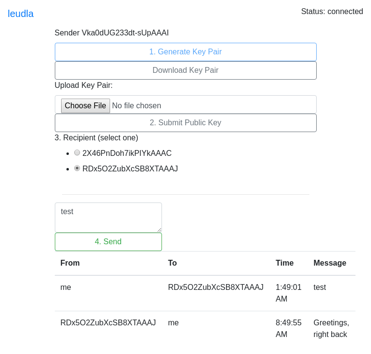

Projects
End To End Encryption
 (live/code) End to end encrypted communications written in Javascript, thanks to crypto.subtle. Through the UI, one creates a public/private key pair, then submits it to server. After selecting a recipient and typing a message, the sender and recipients' private and public keys (respectively) are used to derive a shared key, which is used to encrypt the message for transit. The recipient uses the sender's public key, and their own private key to rederive the shared key and decrypt the message. The server uses express.js and socket.io.
fourd.cpp.js
 <dynamic-graph> (live/code) is a dynamic force directed graph visualization for the browser. It represents a compromise between my Math skill, and the desire to get this product out the door. Using this custom element, you can display graphs on your webpage.
<dynamic-graph> (live/code) is a dynamic force directed graph visualization for the browser. It represents a compromise between my Math skill, and the desire to get this product out the door. Using this custom element, you can display graphs on your webpage.
Social Cartography
 Social Cartography is a prototype for a tool for visually displaying social hierarchies. It works by entering pairs of subentities and superentities, in the form sub@super. Repeat this process, double click the labels to change pictures, and watch the graph grow as you enter information.
Social Cartography is a prototype for a tool for visually displaying social hierarchies. It works by entering pairs of subentities and superentities, in the form sub@super. Repeat this process, double click the labels to change pictures, and watch the graph grow as you enter information.
Chess
 This is a free online version of a chess board (live), no registration required. Simply enter a unique name in the top bar and have your partner enter the same name. Now you two are connected, and can see each other move the pieces. Written with expressjs and socket.io, and hosted on heroku.
This is a free online version of a chess board (live), no registration required. Simply enter a unique name in the top bar and have your partner enter the same name. Now you two are connected, and can see each other move the pieces. Written with expressjs and socket.io, and hosted on heroku.
jquery.kauth.js
 jquery.kauth.js (code) is a client side oauth 1.0 implementation based strictly on RFC 5849. Knotis, Inc. generously donated the code back to me after it was no longer needed.
jquery.kauth.js (code) is a client side oauth 1.0 implementation based strictly on RFC 5849. Knotis, Inc. generously donated the code back to me after it was no longer needed.
Genetic Programming
 Genetic programming (ipynb) is a fun project to familiarize myself with matplotlib's pyplot.
Genetic programming (ipynb) is a fun project to familiarize myself with matplotlib's pyplot.